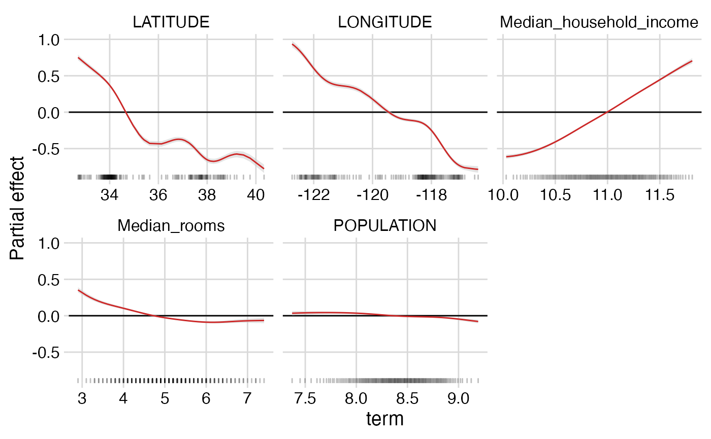

Using the possum package: California housing price example
california-housing.Rmd
library(ggplot2)
library(dplyr)
library(stringr)
library(cowplot)
theme_set(theme_minimal_grid())
library(mgcv)
library(dbarts)
library(possum)Load and prepare California housing data
data(calif)
glimpse(calif)
#> Rows: 7,481
#> Columns: 35
#> $ X <int> 2, 3, 4, 5, 6, 7, 8, 9, 10, 11, 12, 13, 14…
#> $ GEO.id2 <dbl> 6001400200, 6001400300, 6001400400, 600140…
#> $ STATEFP <int> 6, 6, 6, 6, 6, 6, 6, 6, 6, 6, 6, 6, 6, 6, …
#> $ COUNTYFP <int> 1, 1, 1, 1, 1, 1, 1, 1, 1, 1, 1, 1, 1, 1, …
#> $ TRACTCE <int> 400200, 400300, 400400, 400500, 400600, 40…
#> $ POPULATION <int> 1974, 4865, 3703, 3517, 1571, 4206, 3594, …
#> $ LATITUDE <dbl> 37.84829, 37.84027, 37.84845, 37.84894, 37…
#> $ LONGITUDE <dbl> -122.2495, -122.2544, -122.2573, -122.2647…
#> $ GEO.display.label <chr> "Census Tract 4002, Alameda County, Califo…
#> $ Median_house_value <int> 909600, 748700, 773600, 579200, 480800, 46…
#> $ Total_units <int> 929, 2655, 1911, 1703, 781, 1977, 1738, 12…
#> $ Vacant_units <int> 37, 134, 68, 71, 65, 236, 257, 80, 500, 14…
#> $ Median_rooms <dbl> 6.0, 4.6, 5.0, 4.5, 4.8, 4.3, 4.3, 4.4, 4.…
#> $ Mean_household_size_owners <dbl> 2.53, 2.45, 2.04, 2.66, 2.58, 2.72, 2.17, …
#> $ Mean_household_size_renters <dbl> 1.81, 1.66, 2.19, 1.72, 2.18, 2.15, 1.93, …
#> $ Built_2005_or_later <dbl> 0.0, 0.0, 0.0, 0.0, 0.0, 0.0, 13.1, 0.0, 0…
#> $ Built_2000_to_2004 <dbl> 1.2, 0.0, 0.2, 0.2, 0.0, 0.6, 4.1, 2.2, 2.…
#> $ Built_1990s <dbl> 0.0, 2.3, 1.3, 1.1, 1.2, 1.8, 1.6, 0.6, 0.…
#> $ Built_1980s <dbl> 1.3, 3.2, 0.0, 1.9, 1.4, 2.2, 2.4, 5.9, 0.…
#> $ Built_1970s <dbl> 6.1, 5.2, 4.9, 3.7, 1.0, 3.3, 7.8, 0.0, 4.…
#> $ Built_1960s <dbl> 6.5, 8.3, 4.3, 5.8, 6.5, 0.8, 3.7, 5.5, 11…
#> $ Built_1950s <dbl> 1.0, 5.3, 8.0, 6.0, 19.7, 9.4, 7.5, 9.1, 1…
#> $ Built_1940s <dbl> 10.8, 7.8, 10.4, 7.5, 17.0, 9.7, 13.3, 14.…
#> $ Built_1939_or_earlier <dbl> 73.2, 68.0, 71.1, 73.8, 53.1, 72.4, 46.5, …
#> $ Bedrooms_0 <dbl> 3.0, 11.5, 5.2, 4.9, 3.5, 8.2, 8.9, 14.2, …
#> $ Bedrooms_1 <dbl> 16.4, 28.4, 27.7, 30.2, 20.4, 22.3, 25.0, …
#> $ Bedrooms_2 <dbl> 27.4, 29.2, 33.7, 38.1, 40.1, 43.2, 37.5, …
#> $ Bedrooms_3 <dbl> 34.4, 20.4, 21.9, 19.3, 30.7, 16.7, 25.0, …
#> $ Bedrooms_4 <dbl> 17.5, 7.9, 7.3, 5.4, 4.6, 6.5, 2.1, 5.5, 3…
#> $ Bedrooms_5_or_more <dbl> 1.2, 2.7, 4.2, 2.1, 0.8, 3.1, 1.4, 2.5, 0.…
#> $ Owners <dbl> 66.0, 45.1, 45.0, 43.6, 51.0, 32.2, 28.3, …
#> $ Renters <dbl> 34.0, 54.9, 55.0, 56.4, 49.0, 67.8, 71.7, …
#> $ Median_household_income <int> 111667, 66094, 87306, 62386, 55658, 38646,…
#> $ Mean_household_income <int> 195229, 105877, 106248, 74604, 73933, 5670…
#> $ County <chr> "Alameda County", "Alameda County", "Alame…
## Outcome: log median house values by census tract
y <- log(calif$Median_house_value)
## Dataframe of regressors, and log income and pop
califDf <- calif %>%
dplyr::select(Median_household_income,
POPULATION,
Median_rooms,
LONGITUDE,
LATITUDE) %>%
mutate(Median_household_income = log(Median_household_income),
POPULATION = log(POPULATION))
## Convert regressors to matrix
x <- califDf %>% as.matrix()Construct and plot additive summary
First, define the summary. Here, we look at the individual additive effects of each of the five covariates.
summaryform <- yhat ~ s(Median_household_income) + s(POPULATION) +
s(Median_rooms) + s(LONGITUDE) + s(LATITUDE)Now, we estimate and plot the summary.
## Check the dimensions of posterior of yhat (matrix) and the
## posterior mean (vector)
length(yhat)
#> [1] 7481
dim(yhatSamples) #NOTE: Each *column* is a posterior draw
#> [1] 7481 1000
mypossum <- additive_summary(summaryform, yhatSamples, yhat, califDf, verbose=TRUE)
#> Calculating point estimate for the summary...
#> Extracting terms of summary...
#> Looping through factors...
#> Looping through all other terms...
#> Term 1 out of 5...
#> Term 2 out of 5...
#> Term 3 out of 5...
#> Term 4 out of 5...
#> Term 5 out of 5...
#> Combining summary components...
#> Making triangle heatmaps...
#> Triangle 1 out of 5...
#> Triangle 2 out of 5...
#> Triangle 3 out of 5...
#> Warning in triangle(myx, gamTerm[[triangle_terms[jay]]]): num_quantiles argument
#> (100) less than unique values of x (70)
#> Triangle 4 out of 5...
#> Triangle 5 out of 5...
additive_summary_plot(mypossum)
Look at triangles:
additive_summary_triangle_plot(mypossum)